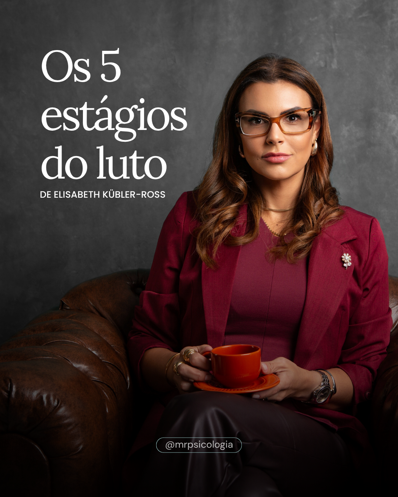
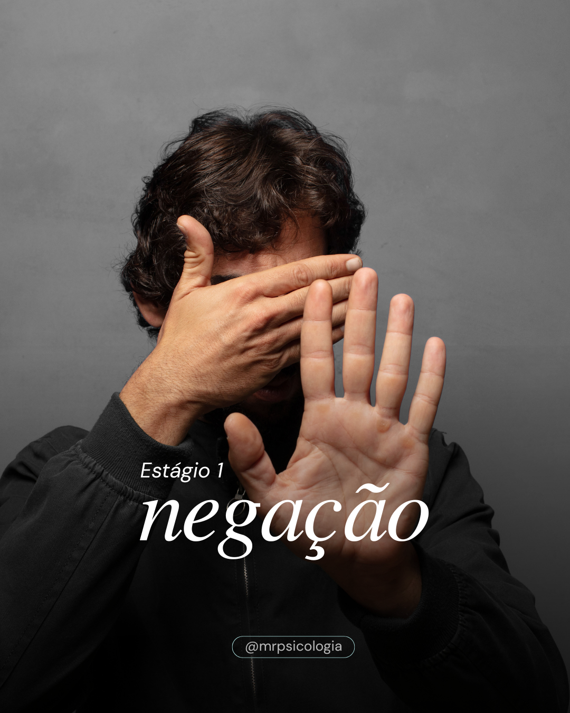
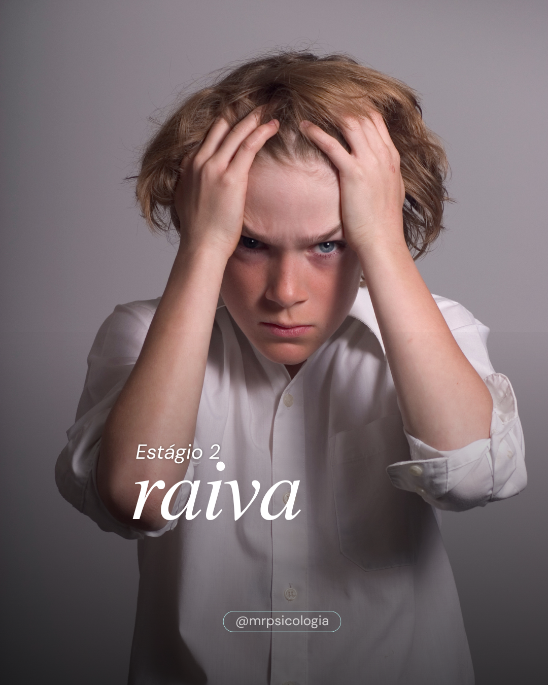
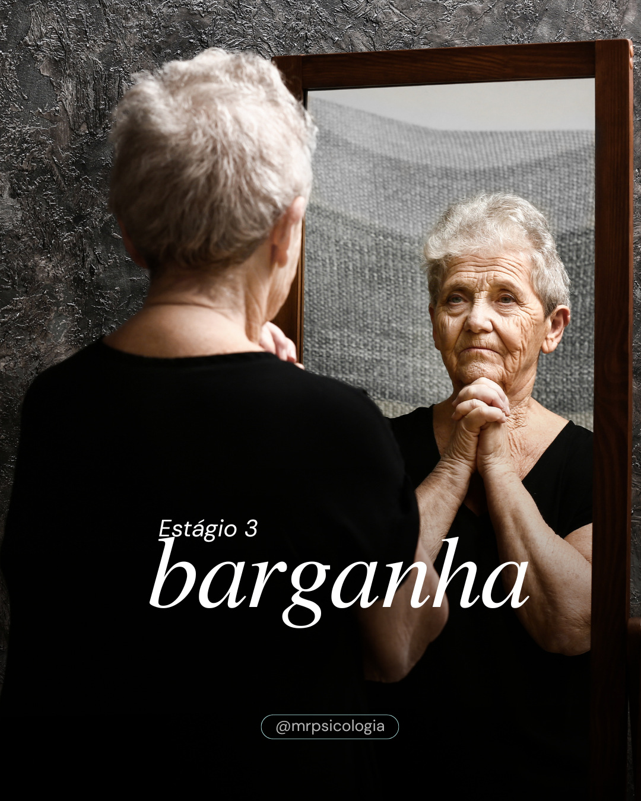
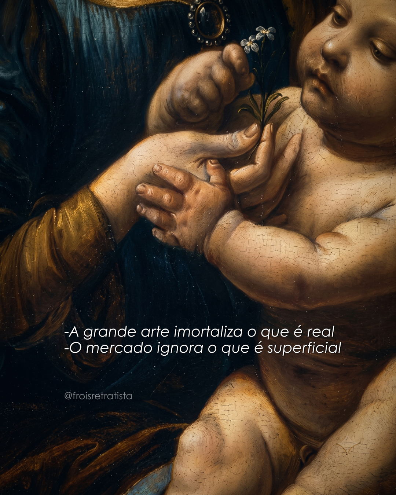

01 ✦ Desenvolvendo o Conceito
Crio ideias e conceitos visuais perfeitamente alinhados ao direcionamento estratégico da sua marca.
✦ Estrategista Digital ✦ Social Media ✦ Creative Content ✦
🧙♀️ Transformando marcas em comunidades e dados em histórias inesquecíveis.
Estrategista Digital ⛧ Social Media ⛧ Creative Content
Sou Engenheira de Produção, graduanda em Sistemas de Informação e apaixonada pela arte de criar. Minha atuação como Estrategista Digital e Social Media é uma verdadeira alquimia: combino o rigor da gestão de processos com a criatividade de narrativas envolventes. Utilizo ferramentas avançadas de IA Generativa para transmutar dados e ideias em conteúdos de alto impacto, garantindo posicionamento forte e resultados reais para escritórios, clínicas e especialistas.
📍 Santuário Atual: Guarapari, ES, BR 💫
Clique no case para expandir o direcionamento e visualizar o conteúdo completo: 🔮

🎯 Direcionamento Estratégico:
Utilizar a psicoeducação como pilar de atração para um público engajado em saúde mental e acolhimento humano. Construir autoridade clínica com sensibilidade e humanização do perfil profissional.
🖼️ Direcionamento Visual & Estético:
• Slide 1 (Capa): Retrato autoral e humanizado da especialista para transmitir credibilidade e proximidade instantânea.
• Slides 2 a 6: Imagens conceituais traduzindo visualmente a carga emocional de cada fase, acompanhadas de microcopys enxutas e empáticas.
O luto transforma a forma como habitamos o mundo. A nossa mente precisa atravessar caminhos delicados e dolorosos para conseguir processar uma ausência — e não existe um tempo "certo" ou linear para que isso aconteça.
Se você está atravessando esse processo hoje, não se cobre perfeição ou apressamento. Acolher cada fase faz parte da sua reconstrução. 🤍
👉 Em qual desses estágios do carrossel a sua mente tem buscado processar os sentimentos ultimamente?
Nota: Este conteúdo possui caráter estritamente educativo e preventivo. Ele não substitui a avaliação clínica e o acompanhamento psicológico individualizado. — Mariana Ramos · CRP 12/09115




🎯 Direcionamento Estratégico:
Utilizar a analogia da arte clássica para atrair um público interessado em posicionamento de alto padrão, imagem de autoridade e retratos corporativos de alto valor percebido.
🖼️ Direcionamento Visual & Estético:
Post estático único com imagem de arte clássica renascentista e tipografia minimalista clara sobreposta, mantendo uma estética refinada, imersiva e sofisticada.
Leonardo da Vinci dedicava anos à técnica porque entendia que um retrato não serve para disfarçar o ser humano, mas para revelar sua essência e maturidade.
Quando um trabalho é construído com técnica refinada, profundidade e intenção, o resultado não é passageiro. Ele se torna atemporal e relevante.
O cliente de alto padrão percebe a inconsistência no primeiro segundo. E quando a sua imagem transmite dúvida, você perde o negócio antes mesmo de abrir a boca.
Sua imagem precisa acompanhar a maturidade do negócio que você construiu. O resto é só disfarce.
É assim que a mágica acontece na prática: 🔮
Crio ideias e conceitos visuais perfeitamente alinhados ao direcionamento estratégico da sua marca.
Seleciono referências, cenários e elementos visuais que dão suporte e vida ao conceito definido.
Oriento os detalhes e acompanho a estética com precisão para a captura das suas fotos e vídeos.
Ajusto, faço a curadoria e lapido os materiais para garantir um resultado profissional, fluido e polido.
Disponibilizo o seu conteúdo pronto e otimizado para as plataformas digitais, redes e campanhas.
Escolha qual ferramenta mística você deseja consultar agora: 🔮
Escolha uma carta para revelar a previsão e o conselho para a sua marca:
Criação de conteúdo, roteiros inovadores de vídeos/reels, copys atraentes e gerenciamento completo de legendas. Revisão e agendamento de conteúdos. Integração estratégica de ferramentas de IA generativa para escala de produção. Gestão de cronogramas ágeis (ClickUp) e reporte de métricas com stakeholders (mLabs).
Liderança na otimização de rotinas internas e organização de dados volumosos para tomadas de decisões rápidas. Controle orçamentário, gestão de processos e resolução ágil de problemas complexos de logística e operação.
Ampla vivência em atendimento comercial, operações logísticas e gestão de negócios/projetos.
Design & Criação: Canva, Adobe Express, Figma, Ferramentas de IA Generativa.
Gestão & Organização: Notion, ClickUp, Trello, Jira.
Agendamento & Análise: mLabs.
Produtividade & Análise: Google Workspace, Excel Avançado, Funis de Vendas.
✦ TEMPO RESTANTE PARA A PRÓXIMA LUA CHEIA ✦
Momento ideal para manifestar grandes ideias e lançar novas estratégias...
Deixe seu feedback, parceria ou mensagem de conexão gravada neste livro místico! 📜🔮